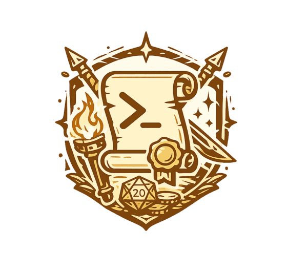

A Claude Code plugin
Claude Code forgets between chats.
quest-system remembers.
Your repo becomes the world — each app in it, a realm. Features are
quests, work sessions are expeditions, and
everything learned is written to plain markdown — so the next chat
starts ahead, not from zero. Drive it yourself, or post a bounty and let an
autonomous party run the whole quest.
❯
/set-bounty "add avatar upload"
The problem
The decisions you make don't survive the chat.
Every call you talk through — an architecture choice, a naming rule, an
approach you deliberately ruled out — lives only in that chat's context.
And context is fragile: a new chat starts blank, and even inside one
chat, memory rots as the conversation grows. The decision fades, and Claude
quietly does the opposite.
Without quest-system
Forgotten
- This chat
You make a real call — and explain exactly why the obvious shortcut is wrong.
- chat ends, or just grows too long — the decision fades
- Next chat
Claude reverses it without a word. You catch it in review — or you don't, and it ships.
Starts at zero
With quest-system
Kept
- This chat
Same call — /make-camp swears it in as an oath, written to the repo, not just the chat.
- saved to
.ai-context/, in your git history
- Next chat
/embark reloads just that decision into a small, fresh context. The call holds.
Starts ahead
Anthropic calls this the model's
“attention budget”
— the fuller the context, the worse its recall. Their fix is the shape of
ours: keep “the smallest possible set of high-signal tokens.”
quest-system parks decisions in durable files and reloads only what the next
chat needs.
Two ways to play
Be the adventurer, or the quest-giver.
Same memory underneath. The difference is who swings the sword.
You drive
Drive it yourself
You are the adventurer. You call each command; counsel
and review help, but every decision is yours. Full control, step by step.
/new-quest scaffold the feature/counsel-quest scout the code, lock the plan/embark open a session, briefed from the repo/make-camp record what you learned/complete-quest distill into project memory
New
Post a bounty
You are the quest-giver. State the goal; an autonomous
party takes the contract and works on your behalf. You answer only the real
judgment calls, then sign off.
❯
/set-bounty "add avatar upload + crop"
- explores the codebase
- plans and refines the approach
- builds it, test-first
- self-tests until green
- reviews its own code, security-checks risky changes
- presents a near-done solution for sign-off
See it run
One week of the loop, in a minute.
A simulated Claude Code session — five commands
across eight steps in one realm (an app in your repo). You talk to Claude at
the prompt (right). The scrolls are Claude's
memory: it reads and writes them for you (middle and left) — you never
edit them by hand.
Press Play to watch it run, or
Step at your own pace. Each step shows the command, its
one-line reason, the files Claude touched, and the transcript. The payoff:
step 6 is a brand-new chat that already knows the danger Claude recorded in
step 4.
Enable JavaScript to run the interactive demo, or read
the full walkthrough in the README.
What's built in
Good habits, not extra commands.
-
Test-driven by default
Test-first for new work, regression-first for bugs, real coverage after — disciplines the party follows inside every expedition.
-
Reviewed before it lands
A code reviewer checks every change before a session is recorded; a security reviewer joins when auth, inputs, or secrets are touched. Confirmed issues become known dangers.
-
Right model for the job
Agents are tiered: heavy thinking for architecture and review, cheap and fast for the busywork — you choose who swings which blade.
-
Memory you can read
Everything lives in .ai-context/ as plain markdown — committed, reviewable, greppable. The RPG flavor stays in filenames; your code stays normal.
The armory
Three more blades on the belt.
Same marketplace, same philosophy: one command, real work, nothing to configure.
-
❯ /explain
Read the runes
One sentence plus a mental model for any code you point
at. Add verbose for an ASCII map and modification guide, or
interactive to conjure a step-through HTML explainer.
-
❯ /summon-seer
Divine your friction
The seer reads your recent Claude Code sessions, finds
what keeps going wrong, and proposes fixes — new skills, hooks, and
CLAUDE.md edits, each tied to evidence. Changes nothing unless you say
--fix.
-
❯ /hunt-bugs
Loose the hounds
Cheap scouts sweep the code through parallel lenses; a
skeptical verifier kills the plausible-but-wrong; only bugs that survive the
second opinion reach you, ranked with a fix plan. Read-only by default.
Install
Two commands to start.
/plugin marketplace add findexu/finpack-claude
/plugin install quest-system@finpack-claude
Restart Claude Code, then run /install-quest-system once in your
project. Start a quest with /new-quest, or hand one off with
/set-bounty.
Prefer owning the files? The repo can be
cloned
instead — the
README
is the canonical install, update, and uninstall guide.